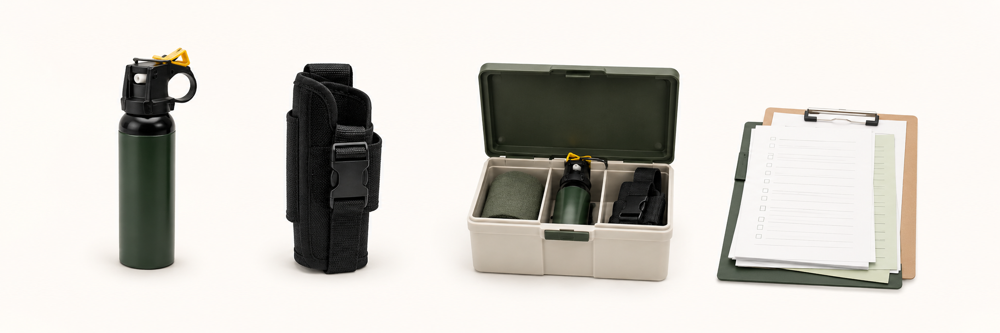

このページについて
突然のご連絡にもかかわらず、ページをご確認いただきありがとうございます。
このページは、美笛キャンプ場様で、利用者向けクマ撃退スプレーの貸出という選択肢が現実的に成り立つかを確認するためのものです。
支笏湖畔で自然やキャンプを楽しむ方に、必要な場合に貸し出せる備品として案内できる余地があるかを、まずは確認できればと考えています。
クマヨケとは
クマヨケは、施設が利用者向けにクマ撃退スプレーを管理・貸出できるようにするための運用支援です。スプレー販売ではありません。
スプレー本体だけでなく、注意事項・同意確認・返却確認・案内文までをひとまとまりで整えています。受付で貸し出せるよう、以下を一式で用意しています。

- クマ撃退スプレー本体
- ホルスター
- 保管用品
- 書類一式
これらの備品の貸出フローを、施設側が扱いやすい形に整理しています。
美笛キャンプ場様にご連絡した理由
美笛キャンプ場様にご連絡した理由は、以下の3点です。
- 支笏湖畔で自然やキャンプを楽しむ利用者が多いと考えたため
- 湖畔や林間で過ごす時間が長く、屋外での備えを意識する場面がありそうなため
- 周辺の自然環境や野生動物について、利用者が気にする場面がありそうなため
必要性を決めつけるものではなく、貴施設の運用に合う形があるかを確認したいと考えています。
施設様にお願いする作業
施設様にお願いする作業は、受付での受け渡し、返却時の確認、簡単な記録が中心です。
専門的な説明をスタッフの方にお願いする想定ではなく、必要な注意事項や確認内容は、あらかじめ用意した文面で確認できる形にします。
- 利用者への受け渡し
- 返却時の確認
- 簡単な記録
実際の流れは、貴施設の受付運用に合わせて確認します。
クマヨケ側で用意するもの
クマヨケ側では、受付での貸出に必要な備品・書類・確認の流れを用意します。
- クマ撃退スプレー本体
- ホルスター
- 保管用品
- 注意事項
- 利用同意書
- 返却チェック表
- QR説明ページ
- 貸出管理アプリ
必要なものをひとまとまりで用意し、施設側の準備や説明が重くなりすぎない形を目指しています。
貸出時に確認すること
クマ撃退スプレーは、取り扱いに注意が必要な備品です。クマヨケでは、貸出時に確認する基本ルールをあらかじめ整理しています。
- 貸出は施設利用者・18歳以上に限定
- 自然活動目的での貸出を想定
- 屋内噴射・対人使用は禁止
- 原則として施設への返却
責任分担、保険、事故時対応、使用や破損時の費用負担については、正式に進める前に書面で整理したうえで進めます。
よくある質問
- クマ撃退スプレーの種類は何ですか？
- 現時点では、モンベルで取り扱いのある「フロンティアーズマン マックス ベアスプレー234mL」を想定しています。
- 紛失時・使用時はどうなりますか？
- 紛失時や使用時は、貸出時にお預かりする保証金を返却しない形で運用します。具体的な金額や対象範囲は、正式に進める前に書面で整理します。
- 費用はどのように決まりますか？
- 設置本数や運用範囲によって変わるため、現時点では個別にご相談しています。
まず伺いたいこと
まずは、美笛キャンプ場様で貸出備品として成り立つ余地があるかを伺えればと考えています。
- 利用者から、熊の出没情報について質問されることがあるか
- 受付での受け渡しや返却確認が現実的か
- 既存の注意喚起とあわせて案内できそうか
売り込みを目的とした商談ではありません。「いまは難しそう」「こういう点が不安」というご意見でも大変参考になります。
代表者について
クマヨケ代表 石田 通隆
札幌東高校、神戸大学を卒業。小学校教諭を経て、現在はシステムエンジニアとして働いています。
教員時代の同僚がクマ被害に遭ったことをきっかけに、クマと人との距離の取り方について考えるようになりました。
札幌市を拠点に、クマ撃退スプレーを宿泊施設やキャンプ場で無理なく管理・貸出できる仕組みを整えています。
連絡先
ご関心がありましたら、簡単な箇条書きでのご返信でも構いません。押し売りや繰り返しの営業連絡は行いません。
宛先：kumayoke@kumayoke.org 件名例：クマヨケについて（美笛キャンプ場様）